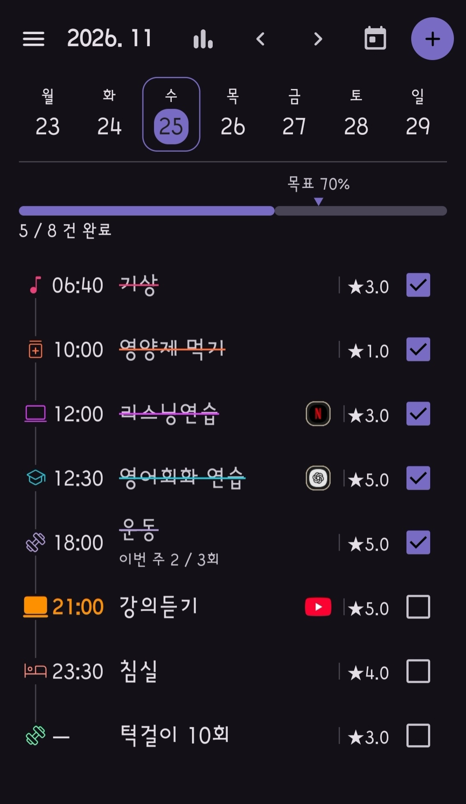
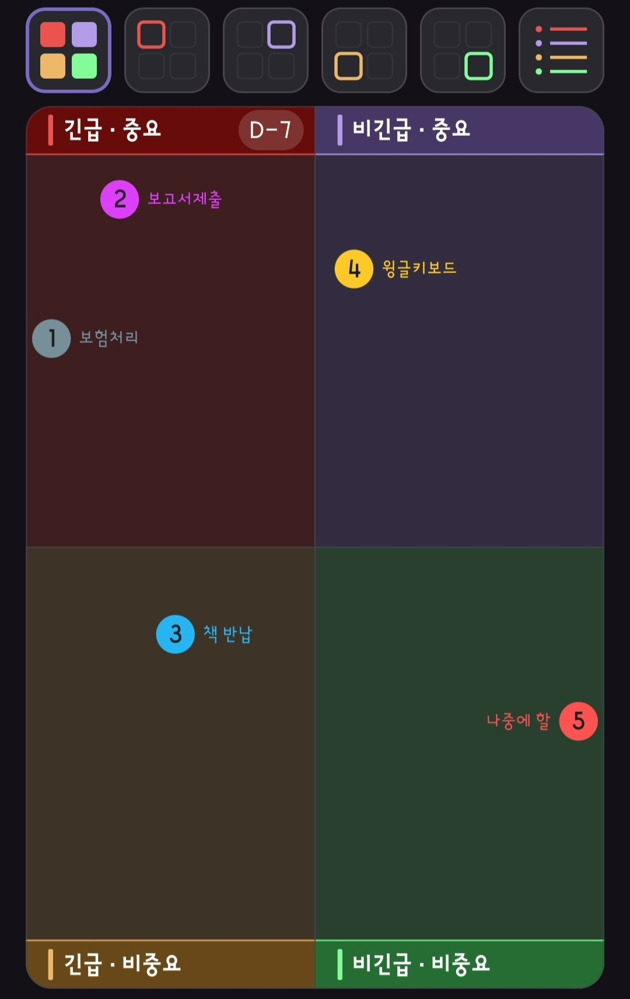
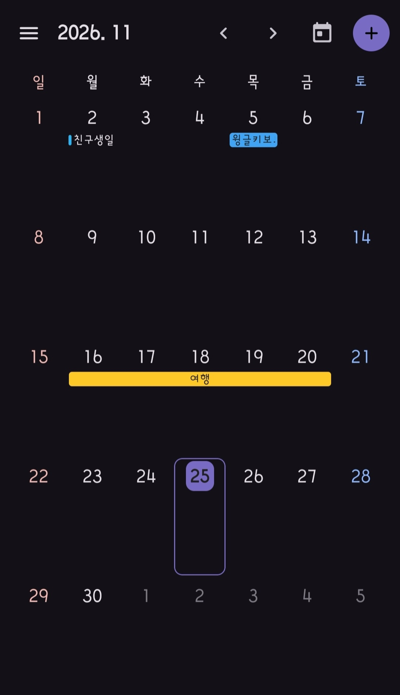
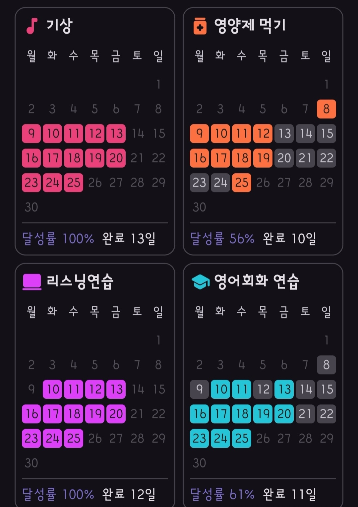

알림에서 실행까지,
단 한 번의 터치
영어 학습 앱, 운동 앱, 유튜브 강의나 웹사이트를 루틴에 연결하세요. 알림이나 루틴의 연결 아이콘을 누르면 필요한 앱이나 페이지가 바로 열립니다.
 TodoMatrix
TodoMatrix
할일의 우선순위부터 매일의 습관, 그리고 약속까지. 나의 하루를 완성하는 하나의 앱.
주요 기능 보기


매트릭스
할일이 늘어날수록 목록만 보고 무엇을 먼저 해야 할지 판단하기 어렵습니다.
투두 매트릭스는 아이젠하워 매트릭스를 기반으로 중요도와 마감까지 남은 시간에 따라 할일을 좌표로 배치합니다. 같은 사분면 안에서도 할일의 위치가 달라 상대적인 우선순위를 한눈에 비교할 수 있습니다.
루틴
매일 하는 습관부터 일주일에 몇 번씩 하는 일까지, 내 생활에 맞춰 반복을 정하고 필요한 시간에 알림을 받으세요.
영어 학습 앱, 운동 앱, 유튜브 강의나 웹사이트를 루틴에 연결하세요. 알림이나 루틴의 연결 아이콘을 누르면 필요한 앱이나 페이지가 바로 열립니다.
루틴마다 중요도에 따라 점수를 정하고, 그 점수를 반영한 하루 목표 달성률을 확인하세요. 나에게 중요한 일을 얼마나 해냈는지 알 수 있습니다.
루틴별로 실천한 날짜와 완료 일수, 달성률을 확인할 수 있습니다. 꾸준히 이어가는 습관과 자주 놓치는 습관을 돌아보세요.

캘린더 통합
한 번 해야 하는 일은 매트릭스에서, 반복하는 일은 루틴에서, 날짜가 정해진 약속은 캘린더에서 확인하세요. 하루를 계획할 때 앱을 오갈 필요가 줄어듭니다.
기기에 연결된 삼성 캘린더와 Google 캘린더 일정을 가져와, 투두 매트릭스에서 만든 일정과 함께 볼 수 있습니다.
개인 Google Drive 동기화
같은 Google 계정으로 Drive를 연결하면 앱에 저장한 할일, 루틴, 일정을 다른 기기에서도 이어서 관리할 수 있습니다. 동기화 데이터는 내 Google Drive에 저장됩니다.